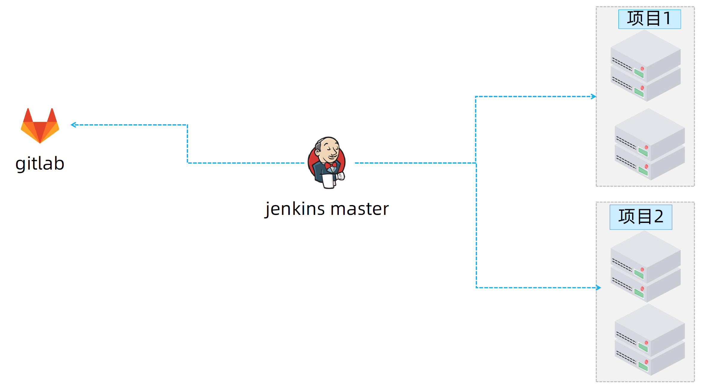
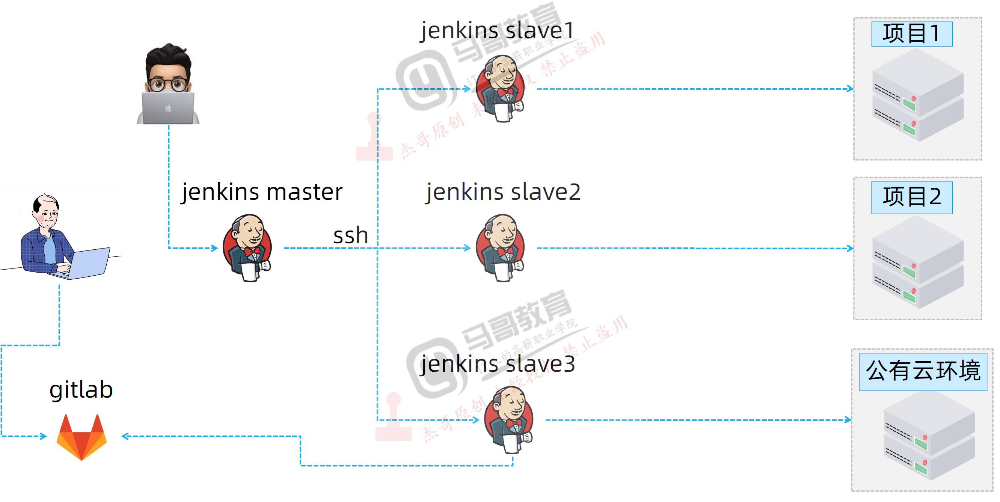
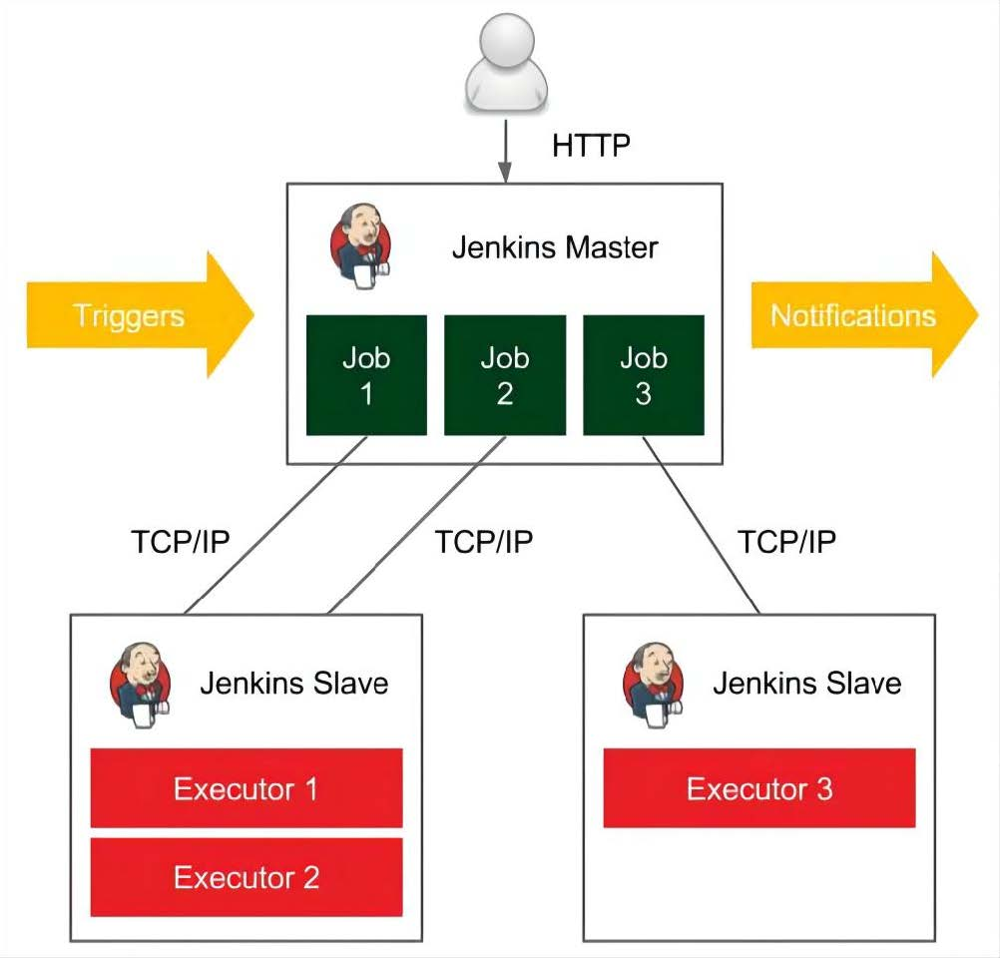
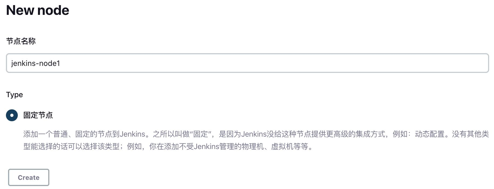
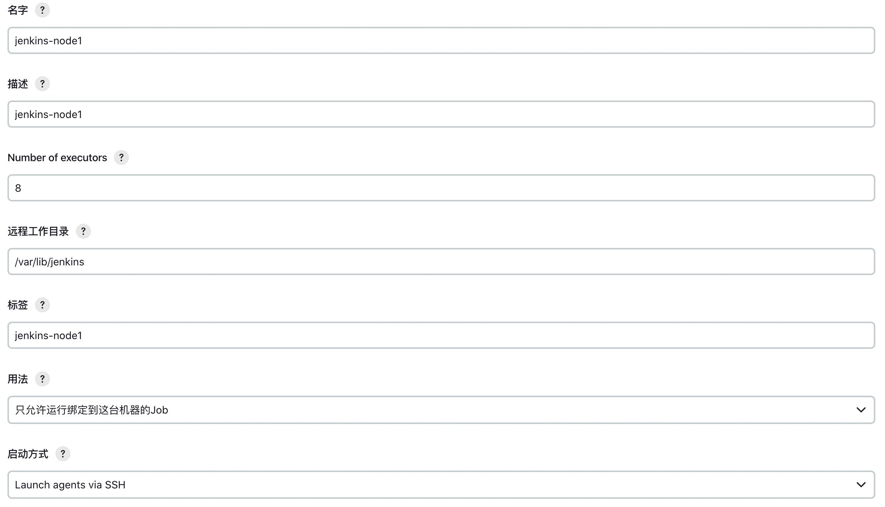
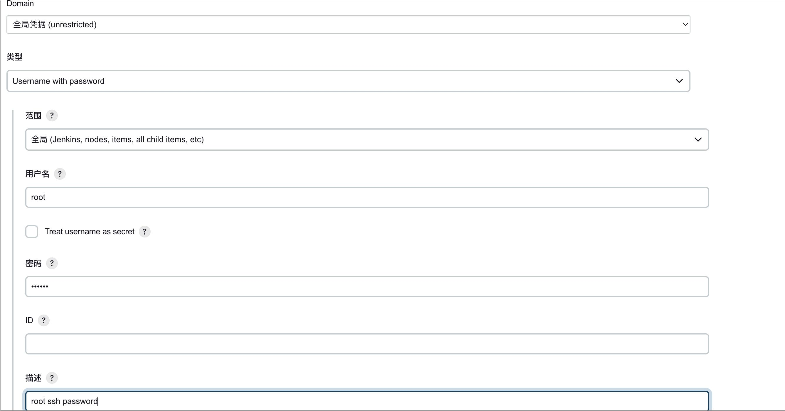
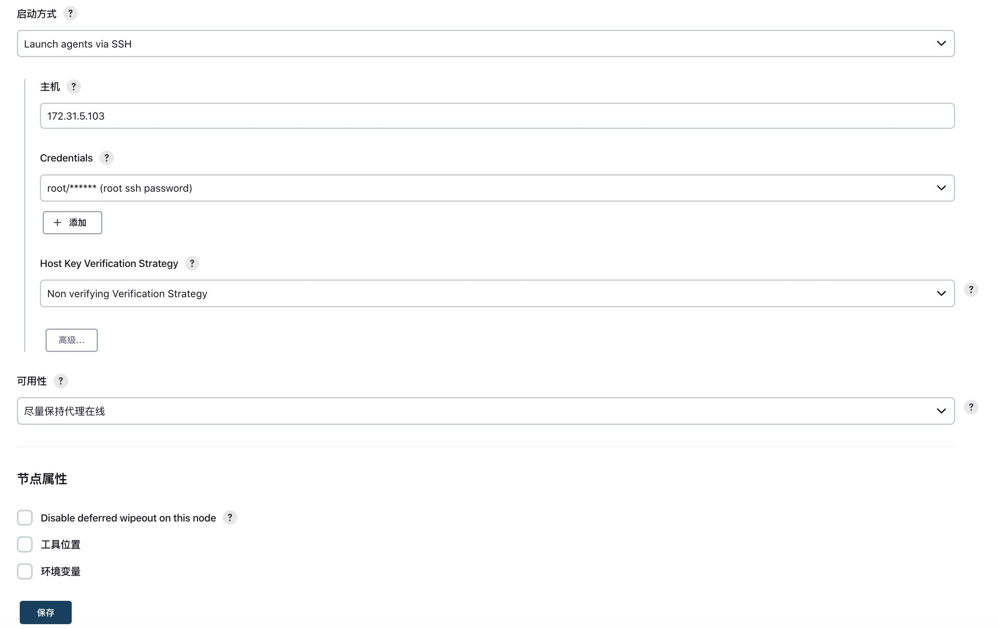
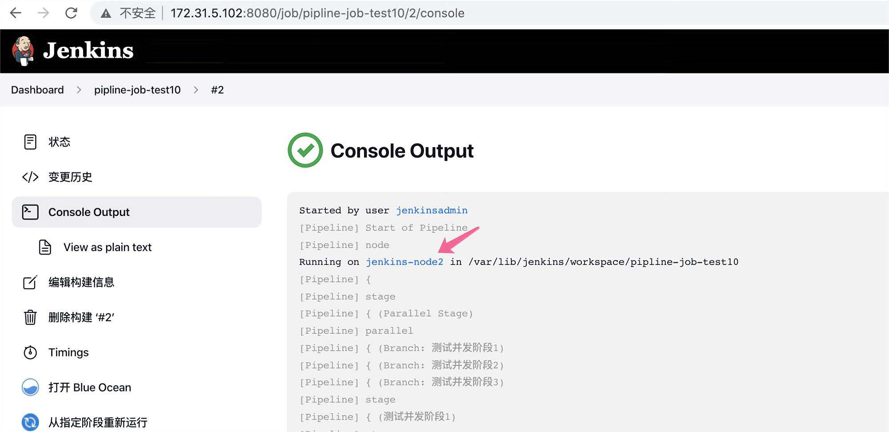

Jenkins 分布式架构概念与实现
Jenkins 单节点环境

Jenkins 分布式环境

- jenkins master 节点负责 job 的创建、管理与触发。
- job 在执行时分配给特定的 jenkins slave 节点执行
- job 执行成功后由 jenkins master 发送邮件通知。
- 降低 jenkins master 的负载。
- 基于 jenkins 分布式架构可以快速横向扩容 jenkins 的构建 job 并发执行能力、提高部署效率。

添加 jenkins slave节点：
- jenkins slave节点创建工作目录与基本环境配置，如果jenkins slave节点需要clone代码和执行java 代码编译，则jenkins slave节点也需要配置java环境并且安装git、svn、maven等与master相同的基础运行环境，另外也要创建与 master相同的数据目录，方便后期目录切换与制品同步，此路径通常与master和各node节点保持一致。
mkdir -p /var/lib/jenkins #创建数据目录
apt install openjdk-11-jdk
添加节点
Jenkins — 系统管理 — 节点管理 — 新建节点：

描述：简单概述，可以标注是哪个机房的哪个节点，无具体作用。
节点标签：对服务器进行筛选（哪些任务在哪个服务器执行，对标 K8s 的 label
Number of executors：Jenkins 可以在此节点上执行并发构建的最大数目。

- 认证凭据：

- 启动方式：Launch agents via SSH
- slave 启动方式配置

验证jenkins slave节点状态：

jenkins slave节点执行job：
